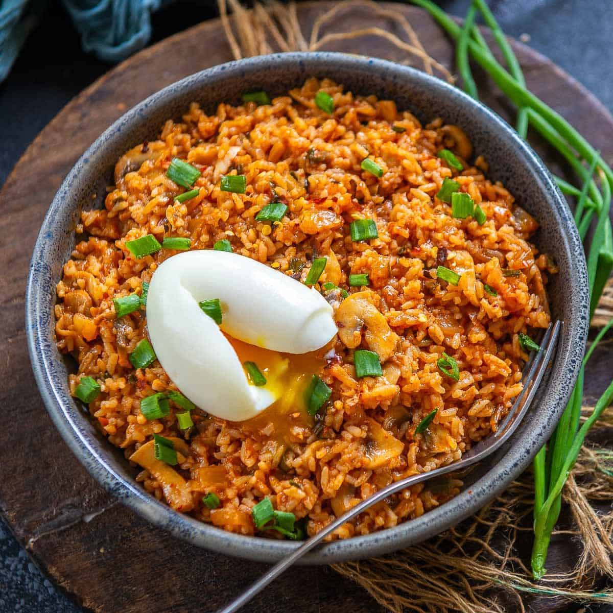

Back to Main
Kimchi Fried Rice Recipe

Description
Kimchi Fried Rice, or Kimchi-Bokkeum-Bap is a popular dish
in South Korea. Primarily comprised of kimchi and rice,
many other ingrediants can be added alongside it. Such as
diced vegetables, eggs, meats, and many more!
Ingredients
- Fermented Kimchi
- Olive Oil
- Cold Rice
- Beef (or any other meat)
- Gochujang
- Sesame Oil
- 1-2 Eggs
- Seaweed Paper
Steps
- Squeeze out the juice out of your fermented Kimchi
- Oil the pan
- When hot add 10% fat beef
- Add kimchi as soon as the beef is almost completely cooked
- Add rice with the gochujang
- Add egg before turning off the heat (either fried or with the fried rice)
- Add a splash of semsame oil before serving
- Before serving, top with strips of seaweed paper